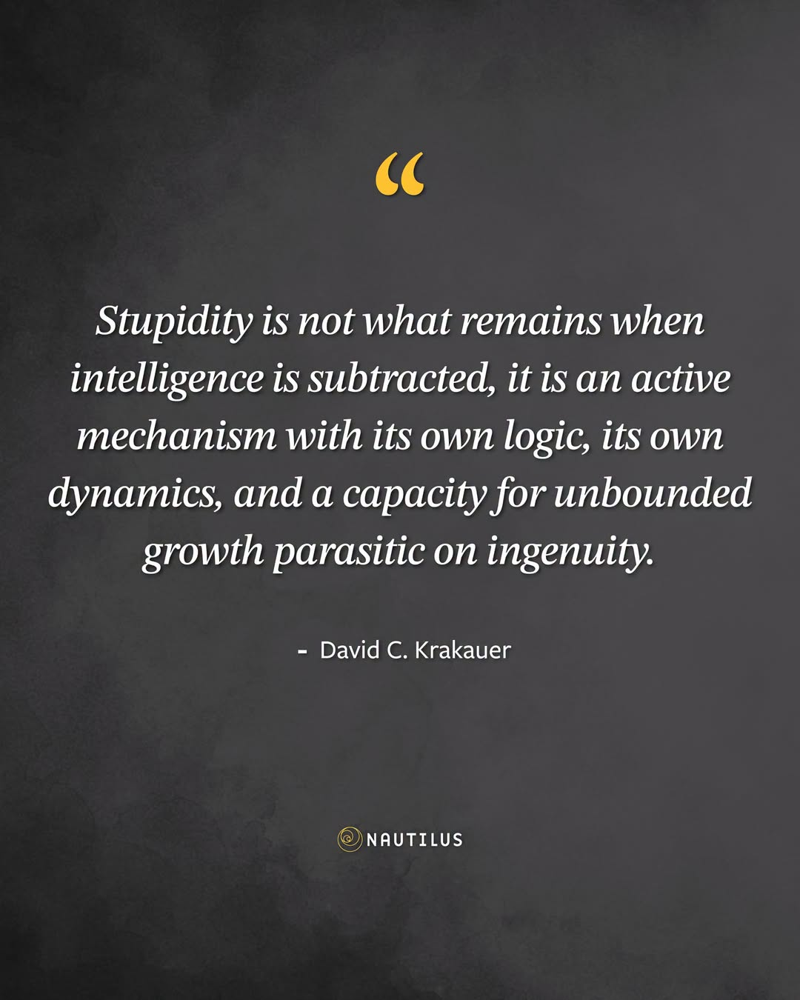

Stupidity is not the opposite of intelligence.
It actually requires a great deal of “cognitive firepower” to get things catastrophically wrong. True stupidity has its own complex logic and dynamics.
You see this all the time with health influencers… people who exert an enormous amount of cognitive effort to arrive at stupid catastrophically-wrong conclusions.
“Stupidity is not what remains when intelligence is subtracted, it is an active mechanism with its own logic, its own dynamics, and a capacity for unbounded growth parasitic on ingenuity.”
#influencersHD #stupidityHD
Stupidity, it turns out, isn't the absence of intelligence — it might be intelligence's evil twin.
It takes real cognitive firepower to get things spectacularly, catastrophically wrong. A rock can't be stupid. Neither can a hurricane. But humans—armed with language, institutions, and ideology—can be stupid on a civilizational scale.
Brilliant tools and frameworks, applied to the wrong problem, don't just fail. They make an easy problem harder.
If intelligence and stupidity really do scale together, super-intelligence might just be the opening act for something else entirely.
David Krakauer is the president and William H Miller Professor of Complex Systems at the Santa Fe Institute. Read his essay, on stupidity:
 nautil.usWhat Makes Humans StupidWhat Makes Humans Stupid: It takes intelligence to get things spectacularly wrong. An essay on our undoing.nautil.us
nautil.usWhat Makes Humans StupidWhat Makes Humans Stupid: It takes intelligence to get things spectacularly wrong. An essay on our undoing.nautil.us